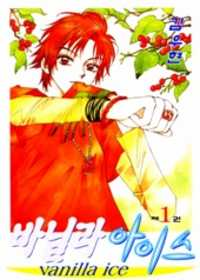

-
Alternative Names:N/A
Author(s): Kim Woo Hyun
Genres: Action, Comedy, Drama, Gender Bender, Romance, School Life, Shoujo
Release:2004
Status: On Hiatus/ Incomplete
Type: Manhwa
Length: 4 Volumes 21 Chapters
Read Online @:

More Info @:

Notes
*CAUTION* last updated was 8/01/10
A delicate girl and a masculin guy transfer into a new school together and show up in casual clothes because they don't have their uniforms yet. Guys and girls go crazy after these pieces of eye candy!! Next day they come in their uniforms but this can't be! The delicate girl turned out to be a...GUY?!? and the masculin guys a girl?? This is just too weird...